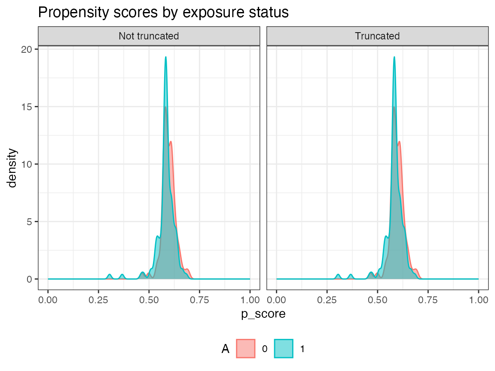
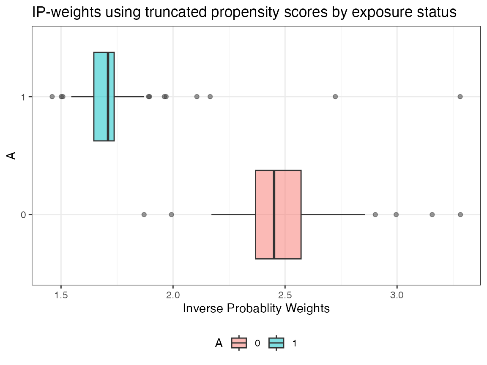
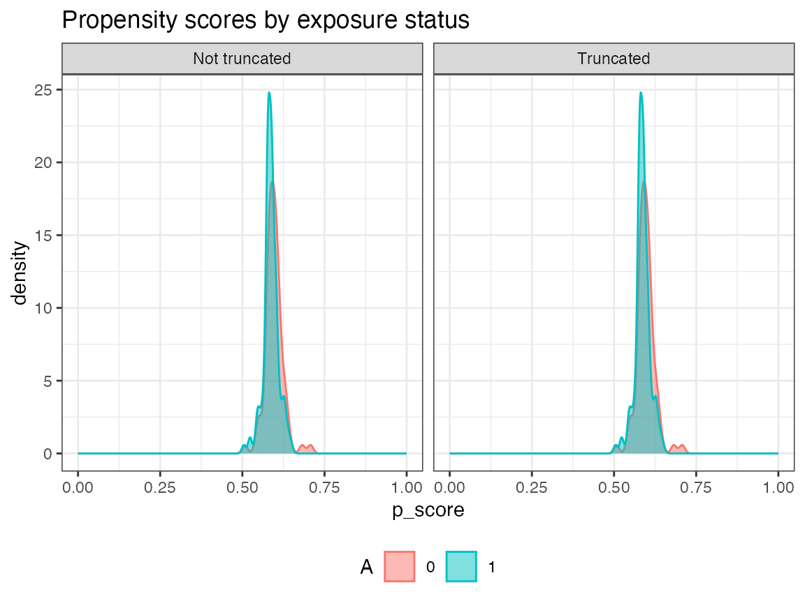
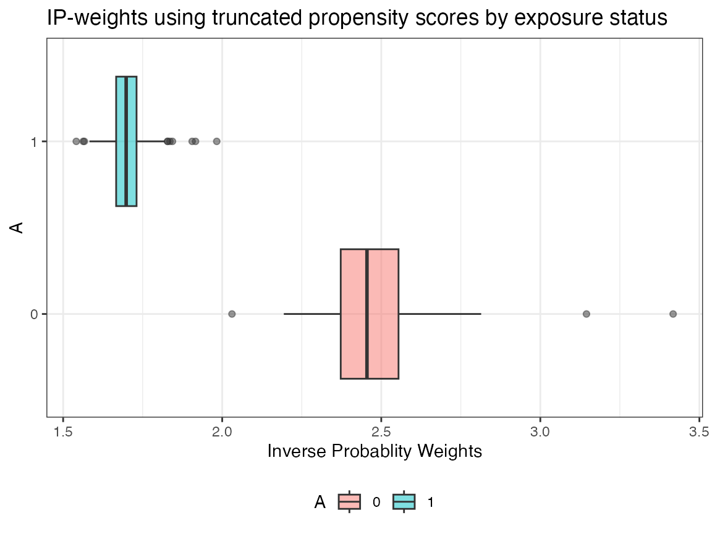

Contents:
# CRAN version
install.packages("AIPW")
# github version
# install.packages("remotes")
# remotes::install_github("yqzhong7/AIPW")* CRAN version only supports SuperLearner and tmle. Please install the Github version (master branch) to use sl3 and tmle3.
#SuperLearner
install.packages("SuperLearner")
#sl3
remotes::install_github("tlverse/sl3")
install.packages("Rsolnp")
library(AIPW)
library(SuperLearner)
#> Loading required package: nnls
#> Loading required package: gam
#> Loading required package: splines
#> Loading required package: foreach
#> Loaded gam 1.22-5
#> Super Learner
#> Version: 2.0-29
#> Package created on 2024-02-06
library(ggplot2)
set.seed(123)
data("eager_sim_obs")
cov = c("eligibility","loss_num","age", "time_try_pregnant","BMI","meanAP")Using native AIPW class allows users to define different covariate sets for the exposure and the outcome models, respectively.
AIPW_SL <- AIPW$new(Y= eager_sim_obs$sim_Y,
A= eager_sim_obs$sim_A,
W= subset(eager_sim_obs,select=cov),
Q.SL.library = c("SL.mean","SL.glm"),
g.SL.library = c("SL.mean","SL.glm"),
k_split = 10,
verbose=FALSE)$
fit()$
#Default truncation
summary(g.bound = c(0.025,0.975))$
plot.p_score()$
plot.ip_weights()
library(AIPW)
library(SuperLearner)
#SuperLearner libraries for outcome (Q) and exposure models (g)
sl.lib <- c("SL.mean","SL.glm")
#construct an aipw object for later estimations
AIPW_SL <- AIPW$new(Y= eager_sim_obs$sim_Y,
A= eager_sim_obs$sim_A,
W= subset(eager_sim_obs,select=cov),
Q.SL.library = sl.lib,
g.SL.library = sl.lib,
k_split = 10,
verbose=FALSE)remotes::install_github("yqzhong7/AIPW@aje_version")
Metalearner is required to combine the estimates from stacklearner!
library(AIPW)
library(sl3)
##construct sl3 learners for outcome (Q) and exposure models (g)
lrnr_glm <- Lrnr_glm$new()
lrnr_mean <- Lrnr_mean$new()
#stacking two learner (this will yield estimates for each learner)
stacklearner <- Stack$new(lrnr_glm, lrnr_mean)
#metalearner is required to combine the estimates from stacklearner
metalearner <- Lrnr_nnls$new()
sl3.lib <- Lrnr_sl$new(learners = stacklearner,
metalearner = metalearner)
#construct an aipw object for later estimations
AIPW_sl3 <- AIPW$new(Y= eager_sim_obs$sim_Y,
A= eager_sim_obs$sim_A,
W= subset(eager_sim_obs,select=cov),
Q.SL.library = sl3.lib,
g.SL.library = sl3.lib,
k_split = 10,
verbose=FALSE)If outcome is missing, analysis assumes missing at random (MAR) by estimating propensity scores with I(A=a, observed=1). Missing exposure is not supported.
This step will fit the data stored in the AIPW object to obtain estimates for later average treatment effect calculations.
#fit the AIPW_SL object
AIPW_SL$fit()
# or you can use stratified_fit
# AIPW_SL$stratified_fit()
#estimate the average causal effects from the fitted AIPW_SL object
AIPW_SL$summary(g.bound = 0.025) #propensity score truncation 
AIPW_SL$plot.ip_weights()
stratified_fit()
fits the outcome model by exposure status while fit() does
not. Hence, stratified_fit() must be used to compute
ATT/ATC (Kennedy
et al. 2015)
suppressWarnings({
AIPW_SL$stratified_fit()$summary()
})In default setting, the AIPW$fit() method will be run
sequentially. The current version of AIPW package supports parallel
processing implemented by future.apply
package under the future framework.
Before creating a AIPW object, simply use
future::plan() to enable parallelization and
set.seed() to take care of the random number generation
(RNG) problem:
# install.packages("future.apply")
library(future.apply)
plan(multiprocess, workers=2, gc=T)
set.seed(888)
AIPW_SL <- AIPW$new(Y= eager_sim_obs$sim_Y,
A= eager_sim_obs$sim_A,
W= subset(eager_sim_obs,select=cov),
Q.SL.library = sl3.lib,
g.SL.library = sl3.lib,
k_split = 10,
verbose=FALSE)$fit()$summary()tmle/tmle3
fitted object as input
AIPW shares similar intermediate estimates (nuisance functions) with
the Targeted Maximum Likelihood / Minimum Loss-Based Estimation (TMLE).
Therefore, AIPW_tmle class is designed for using
tmle/tmle3 fitted object as input. Details
about these two packages can be found here and here. This feature is
designed for debugging and easy comparisons across these three packages
because cross-fitting procedures are different in tmle and
tmle3. In addition, this feature does not support ATT
outputs.
tmle
As shown in the message, tmle only support cross-fitting in the outcome model.
# install.packages("tmle")
library(tmle)
library(SuperLearner)
tmle_fit <- tmle(Y=eager_sim_obs$sim_Y,
A=eager_sim_obs$sim_A,
W=eager_sim_obs[,-1:-2],
Q.SL.library=c("SL.mean","SL.glm"),
g.SL.library=c("SL.mean","SL.glm"),
family="binomial",
cvQinit = TRUE)
cat("\nEstimates from TMLE\n")
unlist(tmle_fit$estimates$ATE)
unlist(tmle_fit$estimates$RR)
unlist(tmle_fit$estimates$OR)
cat("\nEstimates from AIPW\n")
a_tmle <- AIPW_tmle$
new(A=eager_sim_obs$sim_A,Y=eager_sim_obs$sim_Y,tmle_fit = tmle_fit,verbose = TRUE)$
summary(g.bound=0.025)tmle3
New GitHub versions (after v0.6.3.1) no longer support sl3
and tmle3. If you are still interested in using the version with sl3 and
tmle3 support, please install
remotes::install_github("yqzhong7/AIPW@aje_version")
Notably, tmle3 conducts
cross-fitting and propensity truncation (0.025) by default.
# remotes::install_github("tlverse/tmle3")
library(tmle3,quietly = TRUE)
library(sl3,quietly = TRUE)
node_list <- list(A = "sim_A",Y = "sim_Y",W = colnames(eager_sim_obs)[-1:-2])
or_spec <- tmle_OR(baseline_level = "0",contrast_level = "1")
tmle_task <- or_spec$make_tmle_task(eager_sim_obs,node_list)
lrnr_glm <- make_learner(Lrnr_glm)
lrnr_mean <- make_learner(Lrnr_mean)
sl <- Lrnr_sl$new(learners = list(lrnr_glm,lrnr_mean))
learner_list <- list(A = sl, Y = sl)
tmle3_fit <- tmle3(or_spec, data=eager_sim_obs, node_list, learner_list)
cat("\nEstimates from TMLE\n")
tmle3_fit$summary
# parse tmle3_fit into AIPW_tmle class
cat("\nEstimates from AIPW\n")
a_tmle3<- AIPW_tmle$
new(A=eager_sim_obs$sim_A,Y=eager_sim_obs$sim_Y,tmle_fit = tmle3_fit,verbose = TRUE)$
summary(g.bound=0)